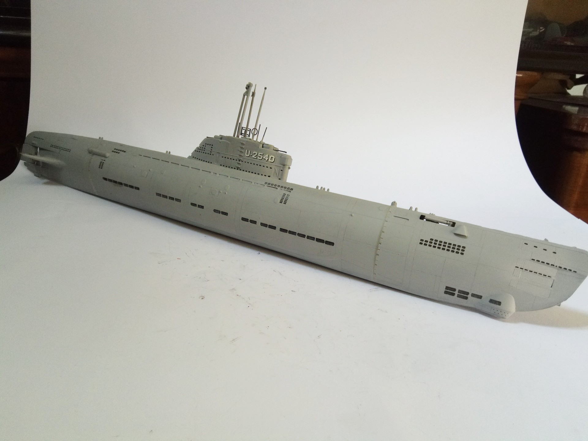
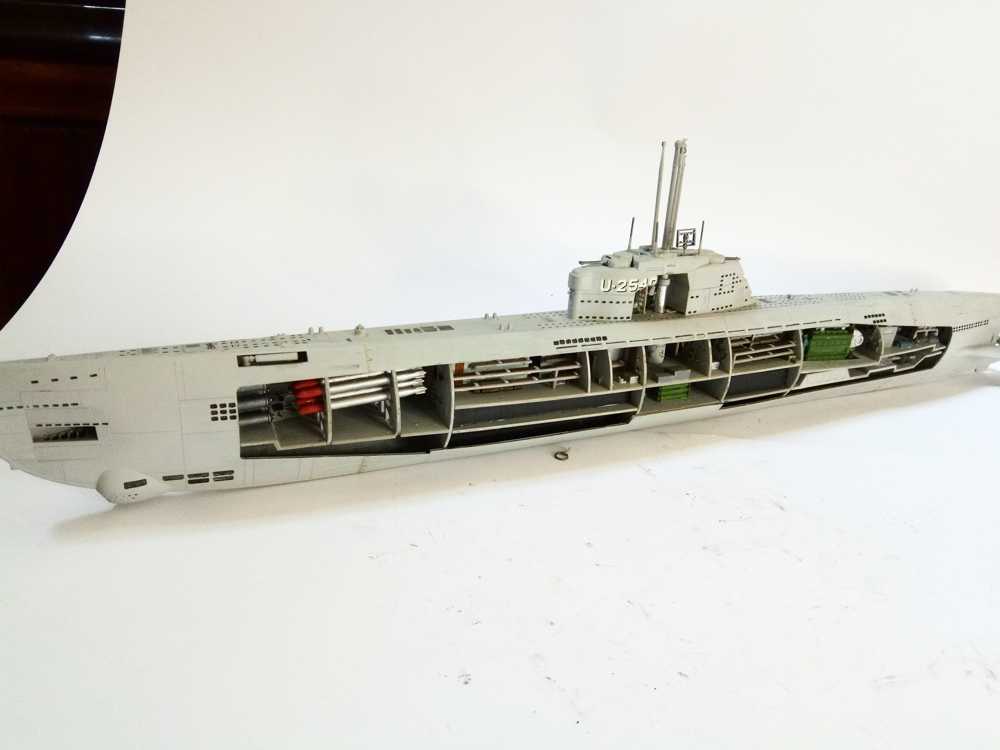

Navi · scale model archive
U Boot UXXI
U Boot UXXI — Kit: Revell, Scale: 1/144. Nice kit with full interior. This U-boot has been preserved and it is now a floating museum that can be visited…

Photo gallery

English description
Nice kit with full interior. This U-boot has been preserved and it is now a floating museum that can be visited in Bremerhaven Germany
#1/144 #Revell
Descrizione italiana
Bel kit con full interior. Questo U-boot has been preserved e lo è now una floating museum che can be visited in Bremerhaven Germany.